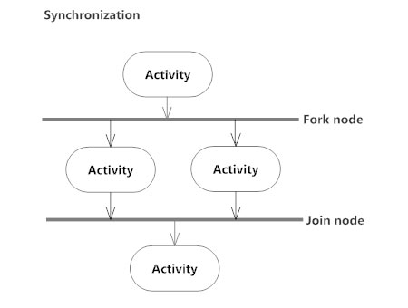

NIM: 1811500085
NAMA: Maulana Malik Fajari
KELOMPOK: TI6A
Hasil saduran pada hari (Rabu, 21 April 2021):
Skenario perhitungan
Analisa Solusi, Proses Bisnis Sistem Usulan, dan Activity Diagram Sistem Usulan.
Dengan adanya Sistem usulan keunggulan dan perbedaan dari sistem yang sedang berjalan telah
terotomatisasi sehingga lebih mudah digunakan, integritas data terjaga tidak akan memakan waktu yang lama dalam mengolah data, karena didalamnya telah
disediakan pencetakan laporan-laporan dan fasilitas lainnya yang akan
memudahkan user untuk menggunakan sistem ini.
Tujuan utama dari Activity Diagram adalah menggambarkan proses bisnis dan urutan aktivitas dalam sebuah proses agar lebih mudah dipahami.
Activity diagram juga digunakan untuk menunjukkan aliran pesan dari satu aktivitas ke aktivitas lainnya… Adapun tujuan pembuatan Activity Diagram lainnya yaitu :
-Menggambarkan proses bisnis dan urutan aktivitas dalam sebuah proses
-Dipakai pada business modeling untuk memperlihatkan urutan aktifitas proses bisnis
-Membantu memahami proses secara keseluruhan
-Menggambarkan aliran paralel, bercabang dan bersamaan dari sistem
KOMPONEN
Komponen yang ada pada Activity Diagram antara lain:
-Start Point/Initial State(Titik Mulai)
Start Point merupakan lingkaran hitam kecil, yang menandakan tindakan awal atau titik awal aktivitasuntuk setiap diagram aktivitas.
-Activity(Aktivitas)
Activity menunjukan aktivitas yang dilakukan atau yang sedang terjadi dalam activity diagram.
-Action Flow(Arah)
Action Flow digunakan untuk transisi dari suatu tindakan ke tindakan yang lain atau menunjukan aktivitas selanjutnya setelah aktivitas sebelumnya.

-Decision(Keputusan)
Decision adalah suatu titik atau point pada activity diagram yang mengindikasikan suatu kondisi dimana ada kemungkinan perbedaan transisi.
-Synchornization
Synchornization dibagi menjadi 2 yaitu fork dan join.
Fork (percabangan) digunakan untuk memecah behaviour menjadi activity atau action yang paralel.
Join (penggabungan) untuk menggabungkan kembali activity atau action yang paralel.

-Merge Event(Menggabungkan)
Merge Event berfungsi untuk menggabungkan flow yang dipecah oleh decission.
-Swimlanes
Swimlanes berfungsi untuk memecah activity diagram menjadi baris dan kolom untuk membagi tangung jawab obyek-obyek yang melakukan aktivitas.
-Final State/End Point(Titik Akhir)
Final State menunjukan bagian akhir dari aktivitas.